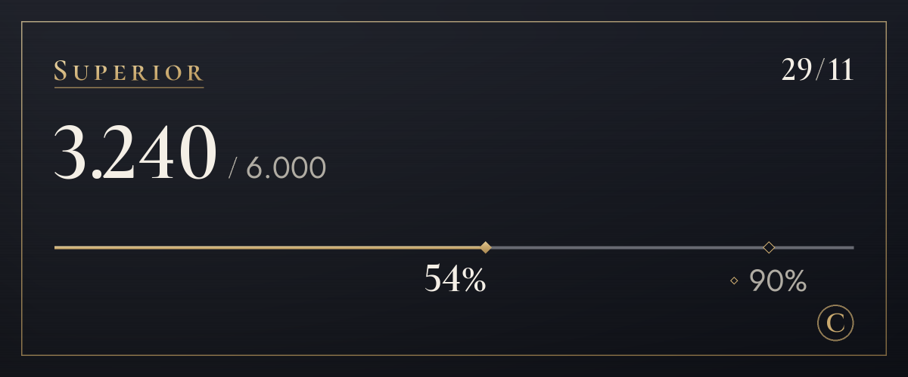

Planos
Comece grátis e troque de plano quando precisar de mais.
Estamos em fase piloto, então ainda não aceitamos pagamentos. Quando os pagamentos estiverem disponíveis, você vai assinar e cancelar nesta página. Durante a fase piloto, a tradução não para quando você passa do limite.
- 01
GUEST
US$ 0
Experimente primeiro (ver o original não conta)
- 100 traduções por mês (cerca de 3 por dia)
- 4 tons nos primeiros 14 dias
- 3 palavras no glossário
- 02
STANDARD
US$ 4,99/mês
Escolha um tom para cada servidor: descontraído com os amigos, educado em um lugar novo
- 1.200 traduções por mês (cerca de 40 por dia)
- 4 tons
- 20 a mais por dia ao atingir o limite
- 10 palavras no glossário
Recomendado
03SUPERIOR
US$ 9,99/mês
De sobra para conversar todo dia
- 6.000 traduções por mês (cerca de 200 por dia)
- 4 tons
- 20 a mais por dia ao atingir o limite
- 30 palavras no glossário
- 20 explicações por mês
- salas de tradução 1:1
- 4.000 traduções por mês na cota para amigos sem plano
- 04
DELUXE
US$ 14,99/mês
Um limite maior, para quem usa muito
- 20.000 traduções por mês (cerca de 667 por dia)
- 4 tons
- 20 a mais por dia ao atingir o limite
- 100 palavras no glossário
- 60 explicações por mês
- salas de tradução para até 10 pessoas, incluindo você
- 15.000 traduções por mês na cota para amigos sem plano
- 05
SUITE
US$ 36,99/mês
O maior limite, para traduzir muitas fotos e quadrinhos
- 50.000 traduções por mês (cerca de 1.667 por dia)
- 4 tons
- 50 a mais por dia ao atingir o limite
- 300 palavras no glossário
- 200 explicações por mês
- salas de tradução para até 10 pessoas, incluindo você
- 40.000 traduções por mês na cota para amigos sem plano
Também usam este limite: texto em imagens (normalmente cerca de 9 por imagem) e tradução na imagem (normalmente cerca de 19, com precisão cerca de 40)
- Os preços são em dólares americanos. Os impostos do seu país são adicionados no pagamento.
- Os planos pagos são assinaturas mensais com renovação automática. Você pode cancelar quando quiser, e a próxima cobrança não acontece.
- O plano Guest (grátis) nunca vira um plano pago sozinho.
- Seu direito de arrependimento é limitado na parte que você já usou, e você pode testar o plano Free antes.
- As traduções são feitas por IA (Claude, da Anthropic). Elas podem ter erros, então confira o original quando for algo importante.
- Os detalhes estão nos Termos de uso e na Política de reembolso.
Como as traduções são contadas
Os limites dos planos são contados em traduções. Uma mensagem traduzida para um idioma é 1 tradução; o que exige mais processamento, como imagens, conta o que usa.
- Texto
- 1 por mensagemMensagens longas contam mais 1 a cada 200 caracteres de coreano, chinês ou japonês, ou a cada 500 caracteres em outros idiomas. Mensagens sem nada para traduzir não contam.
- Clique direito
- 1 por mensagemIgual ao texto. Ver o original ou outro idioma não conta.
- Texto em imagens
- Cerca de 9 por imagemÉ contado pelo trabalho de ler e traduzir a imagem. Imagens sem texto não contam, e são lidas até 4 imagens por mensagem.
- Tradução na imagem
- Cerca de 19 por imagemÉ contado pelo trabalho que dá, então imagens com mais texto usam mais; com texto em um só lugar, começa em 10. Acima de 16 blocos de texto, você vê o custo antes, e a imagem só é feita depois que você confirma (até 128 blocos). Trocar a fonte não conta.
- Pôr com precisão
- Cerca de 40 por imagemNos planos pagos, você pode escolher essa opção em qualquer imagem. Cada letra é conferida mais uma vez, para mais precisão.
- Mensagens de voz Em breve
- 1 por segundo de áudioA transcrição e a tradução de mensagens de voz enviadas pelo app do celular estão sendo preparadas. Quando abrir, soma-se a tradução do que foi dito, e mensagens sem fala não contam.
- Limite diário
- 200 imagensA contagem é por pessoa e igual em todos os planos, para que um uso automatizado em massa não possa parar as traduções de todo mundo.
- Quem paga
- Traduções abertas pelos ícones das imagens ou com o botão direito contam para quem apertou, não para quem publicou.
Por exemplo
Com 200 traduções por dia
o equivalente diário do Superior
Dá para traduzir algumas imagens e ainda conversar a noite toda.
Com 40 traduções por dia
o equivalente diário do Standard
Dá para uma hora de conversa com os amigos.

/traduzir uso.Perguntas frequentes
Quando os pagamentos vão abrir?
Estamos em fase piloto, então não aceitamos pagamentos e todo mundo usa o plano Guest (grátis). Os pagamentos abrem quando o registro da empresa e o processador de pagamentos estiverem prontos, e vamos anunciar a data nas novidades do servidor de suporte e nesta página. A Coreia paga em wons, e o resto do mundo em dólares americanos.
Como eu cancelo?
Quando os pagamentos estiverem disponíveis, você cancela na página de planos deste site, o mesmo lugar onde assina. Ao cancelar, a próxima cobrança não acontece, e você mantém o plano até o fim do período já pago. A tela “Gerenciar plano” no painel de configurações do bot também traz você para cá.
Como funcionam os reembolsos?
Você pode receber o reembolso total do seu primeiro pagamento em até 7 dias. Também reembolsamos em caso de falhas no serviço ou quando o serviço for diferente do que esta página diz. O resto está na Política de reembolso.
As imagens são armazenadas?
O bot não armazena as imagens. Elas vão para a Anthropic, que lê o texto, e só o resultado é mostrado a você. Nada é enviado antes de você apertar o botão. O texto lido também não é armazenado; só a tradução segue a regra do cache de traduções (30 dias). Para que a troca de fonte seja redesenhada na hora, uma imagem em que você aperta “Pôr na imagem” fica 15 minutos só na memória, junto com o texto lido e a tradução dele.
Quem faz as traduções?
Uma IA (Claude, da Anthropic). A mesma IA lê o texto nas imagens. As traduções podem ter erros, então confira o original quando for algo importante. Imagens com traduções desenhadas trazem “Tradução de IA” na descrição (texto alternativo) e no aviso abaixo do resultado.